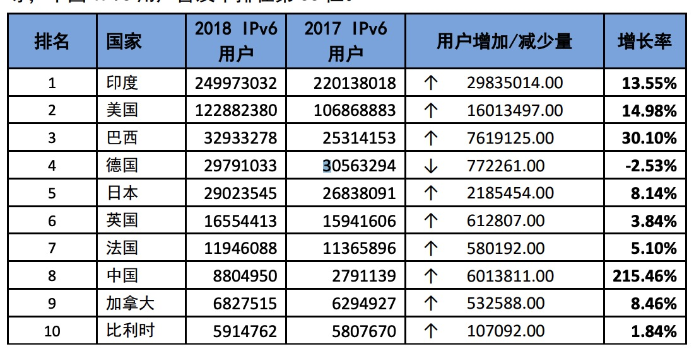
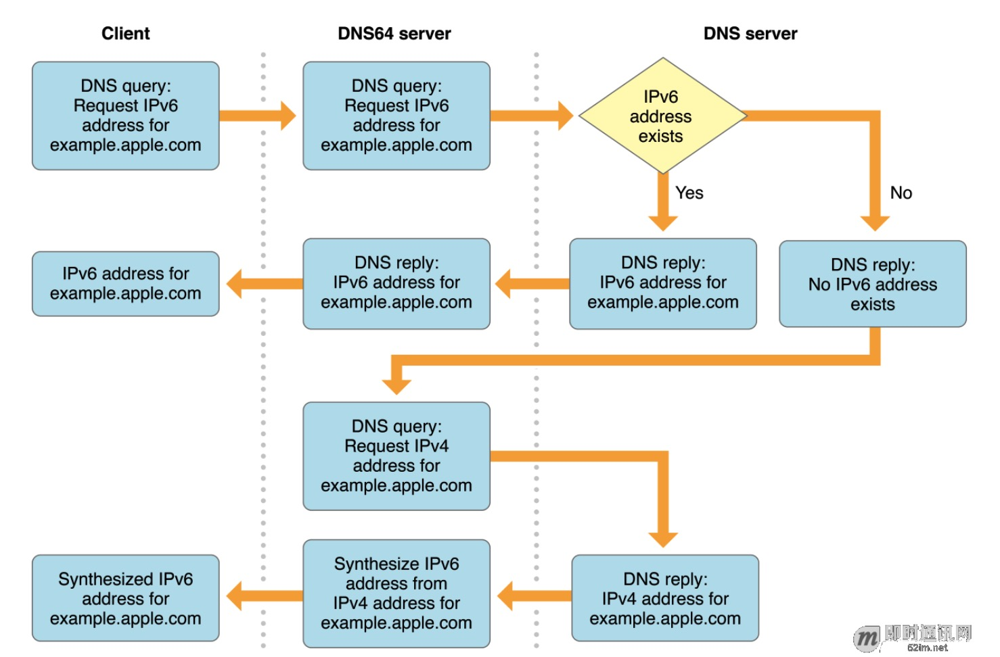

为什么要使用IPv6
IPv4地址极度匮乏
根据互联网数据研究机构的统计，全世界 76.7亿人口，网民总数已经达到了 43.9 亿（2019年1月）。
IPv4的地址池是2^32约42.9亿，IPv4地址极度匮乏
物联网高速发展
物联网，现在进入高速发展阶段，地址需求非常大（根据预测，2025年，物联网的连接数将超过270亿），迫切需要IPv6。
国家发展
2017年11月中国中共中央办公厅、国务院办公厅印发了《推进互联网协议第六版(IPv6)规模部署行动计划》，提出用 5 到 10 年时间，形成下一代互联网自主技术体系和产业生态，建成全球最大规模的 IPv6 商业应用网络，实现下一代互联网在经济社会各领域深度融合应用，成为全球下一代互联网发展的重要主导力量。
IPv6全球部署更新概况
思科统计数据
思科(Cisco)提供的全球IPv6部署情况统计，是根据各个国家地区的网络（IPv6 Prefix/Transit IPv6 AS），IPv6网站及 IPv6用户等数据，按照一定权值分配计算方法，得出的 IPv6部署程度综合情况。APNIC Labs统计数据，中国排在第66位（该机构的测量工具对中国数据的测量可能不准确）
根据google网站监测，至2018年12月，使用IPv6访问的用户占总用户最高已超过 26%
2012年6月6日，国际互联网协会专门举行了“世界IPv6启动纪念日”。这一天，多家知名网站（如Google、Facebook和Yahoo等）正式开始永久性支持IPv6访问。
中国网信网统计数据
- 中国网信网8月30日发布的第44次《中国互联网络发展状况统计报告》数据显示，截至2019年6月，我国IPv6 地址数量为50286 块/32，较2018年底增长14.3%，已跃居全球第一位。我国IPv6 规模部署不断加速，IPv6 活跃用户数达1. 3亿，基础电信企业已分配IPv6 地址用户数12. 07 亿³;域名总数为 4800 万个，其中“.CN”域名总数为 2185 万个，较2018年底增长2.9%，占我国域名总数的45.5%。
- 我国IPv6部署的增长率远高于头部其他国家
 - 今年软件IPv6支持度对比2017年并无太大变化。移动端应用开始发力，三大运营商旗下应用大部分已经支持IPv6，阿里和美团的核心产品也已明确表示支持IPv6，腾讯也随后宣布将在2019年对QQ和微信完成IPv6 升级。
IPv6的优点
IPv6的地址池是2^128约340万亿亿亿亿个
这是他的地址总数：
340282366920938463463374607431768211456
IPv6地址介绍
IPv6地址格式
xxxx:xxxx:xxxx:xxxx:xxxx:xxxx:xxxx:xxxx
X的取值范围0~F
网络模型简单介绍
本篇文章主要涉及网络模型中网络层，IP协议
- 网络层任务：将传输层传下来的报文段封装成分组，选择适当的分组使传输层传下来的分组能够交付到目的主机，为每台主机分配IP地址
- 网络层功能：为传输层提供服务，组包跟拆包，路由选择，拥塞控制
- 网络层协议：ICMP（Internet组管理协议），ARP（Address Resolution Protocol，从IP地址得到MAC地址），RARP（Reverse Address - - - Resolution Protocol），IP，IGMP（Internet互联网控制报文协议）
- 网络层传输单位：数据报
- 网络层实现硬件：路由器
IPv6地址展示优化
- IPv6地址：2001:0DB8:02de:0000:0000:0000:0000:0e13
- IPv6省略0地址：2001:DB8:2de:0:0:0:0:e13
- IPv6简写0地址： 2001:DB8:2de::e13（一个IPv6地址中只能存在一个::）
IPv6分配规则
现在大家都知道了IPv6的地址很多，那么我们怎么去分配他呢？
- 无状态地址自动配置（SLAAC）
运营商只会给你分配一次前缀地址，当你的路由器获取到前缀地址后，你其它的设备都会通过这个前缀地址向下分配剩余的地址。
是不是有点细思极恐，以后IP地址是大家所有设备的唯一标识，并且连接在同一个路由器下的分配的IP将会有相同的前缀，这个可是比身份证号去获取关系链可靠多了。
- 按照IPv6的分配规则，前缀地址必须在/60位以内。目前中国的运营商有两种前缀，一个是56位，一个是60位。电信大都是56，联通移动大都是60的。当然，这个长度没有好与坏，不管是56还是60，你获得的剩余地址量都是用不完的，哪怕是给你家里每一粒灰尘都分配上公网IP。问题就在于，运营商只会给你分配一次前缀地址，当你的路由器获取到前缀地址后，你其它的设备都会通过这个前缀地址向下分配剩余的地址。
打个比方，通过PPPoE拨号，
- 你将会获取到WAN口IP地址，这个机制和IPv4是一样的：
240e:9c:2a04:c8ad:bdd8:af0b:843b:f60/64 - 然后你还可以获取到一个前缀IP地址：
240e:9c:2cd3:8d00::1/56 - 当你的手机连接WIFI的时候，路由器就会按照这个前缀地址给你的手机向下分配剩余的地址，如：
240e:9c:2cd3:8d00:XXXX:XXXX:XXXX:XXXX
IPv5？
讲了这么多IPv6跟IPv4，那么有没有IPv5呢？这个各位读者可以自行查询一下
IPv4&IPv6请求头对比
IPv4
根据提供的IP选项，有20-60个字节的可变长度。
下面是一次真实的IPv4请求抓包
0100 …. = Version: 4（ IP协议的版本号，一般有两个值，如果为4就代表是IPv4，6就代表是IPv6协议。 4→IPv4， 6 → IPv6）
…. 0101 = Header Length: 20 bytes (5)（IP分组首部长度，这里是以四个字节为单位，如果值为5，则表示首部长度为20个字节（5×4），从图中也可以看到，ip首部长度最短应该是20个字节（一共有五行，每行四个字节），除掉可变部分，固定部分就是20个字节。）
Differentiated Services Field: 0x00 (DSCP: CS0, ECN: Not-ECT)（更好地服务不同类型IP数据报(如实时数据报IP电话应用、非实时通信流FTP)，Cisco将TOS前3位标识不同服务等级，即优先级。）
Total Length: 430（IP分组的总字节数(首部+数据)，最大IP分组的总长度： 65535B）
Time to live: 64（IP分组在网络中可以通过的路由器数（或跳步数））
Protocol: TCP (6)（指示IP分组封装的是哪个协议的数据包，6为TCP，表示封装的为TCP段； 17为UDP， 表示封装的是UDP数据报）
Source: 10.43.102.78
Destination: 101.89.15.106
IP源：112.237.231.93，目标：223.202.6.27
IPv6
40个字节的固定长度。没有IP报头选项。通常，IPv6报头比 IPv4报头简单。
下面是一次真实的IPv6请求抓包
0110 …. = Version: 6（版本字段用来表示IP数据报使用的是IPv6协议封装）
Traffic Class（通信分类字段用来标识对应IPv6的通信流类别，或者说是优先级别，占8位，类似于IPv4中的ToS（服务类型）字段。）
Flow Label(流标签字段时IPv6数据报中新增的一个字段，占20位，可用来标记报文的数据流类型，以便在网络层区分不同的报文。)
Payload Length: 20（有效载荷长度字段是以字节为单位的标识IPv6数据报中有效载荷部分（包括所有扩展报头部分）的总长度，也就是除了IPv6的基本报头以外的其他部分的总长度，占16位。）
Next Header: TCP (6)（下一个头部字段用来标识当前报头（或者扩展报头）的下一个头部类型，占8位。）
Hop Limit: 64（跳数限制于IPv4报文中的TTL字段类似，指定了报文可以有效转发的次数，占8位。）
Source: 2402:4e00:d000:801:fde0:3fa4:f78e:a3f4
Destination: 240e:e1:a900:50::31
IPv6对比IPv4的区别
首部长度
IPv4首部长度可变，首部的选项字段允许IP首部被扩展，由此导致数据报首部长度可变，故不能预先确定数据字段从何开始，同时也使路由器处理一个IP数据报所需时间差异很大(有的要处理选项，有的不需要)。基于此，IPv6采用固定40字节长度的报头长度(称基本报头)。IPv6如何实现IPv4选项字段类似的功能，答案是扩展报头，并由IPv6基本报头的下一个首部指向扩展报头(如果有的话)。路由器不处理扩展报头，提升了路由器处理效率。分片/重组
网络链路存在MTU (最大传输单元)—链路层数据帧可封装数据的上限。不同链路的MTU不同。
IPv4大MTU分组向较小MTU链路转发时，可以被“分片(fragmented)
IPv6，分片与重组只能在源与目的地上执行，不允许在中间路由器进行。分片与重组是个耗时的操作，将该功能从路由器转移到端系统，大大加快了网络中的IP转发速率。那，如果路由器收到IPv6数据报太大而不能转发到出链路上怎么办？该路由器丢弃该包，并向发送发发回一个”分组太大”的ICMP差错报文，于是发送发使用较小长度的IP数据报重发数据。首部检查和
每个路由器上，IPv4首部检查和都需要重新计算，是一项耗时操作。加之，传输层和链接层协议执行了检验操作，网络传输可靠性提升，所以IPv6不进行首部检查和，从而更快速处理IP分组。
IPv6地址切换流程
双栈技术
广域网上的2个节点间往往经过多个路由器，按照双栈技术的部署要求，之间的所有节点都要支持IPv4/IPv6双栈，并且都要配置了IPv4的公网IP才能正常工作，这里就无法解决IPv4公网地址匮乏的问题。所以一般不单独使用。
我们的目标是要废弃掉IPv4，像下图这样
隧道技术
当前的网络是以IPv4为主，因此尽可能地充分利用IPv4网络进行IPv6通信是十分好的手段之一。隧道技术就是这样子的一种过渡技术。
隧道将IPv6的数据报文封装在IPv4的报文头部后面（IPv6的数据报文是IPv4的载荷部分），IPv6通信节点之间传输的IPv6数据包就可以穿越IPv4网络进行传输。隧道技术的一个很重要的优点是透明性，通过隧道进行通信的两个IPv6节点（或者节点上的应用程序）几乎感觉不到隧道的存在。
上图是一种典型的隧道技术：路由器-路由器隧道，两个IPv6网络中的主机通过隧道方式穿越了IPv4进行通信。其中C节点和D节点被称为边界路由器，边界路由器必须要支持IPv4-IPv6双栈。当IPv6网络1的主机A将IPv6数据包发给边界路由器C，C对IPv6数据包进行IPv4封装，然后在IPv4网络上进行传输，发送到边界路由器D，D收到IPv4的数据包后剥掉IPv4的包头，还原IPv6的数据包，发送到IPv6网络2的主机B。
转换技术
NAT64/DNS64

DNS64在RFC6147中明确定义，将IPv6的地址记录AAAA DNS查询消息转换为IPv4的地址记录查询。当IPv6节点发起DNS请求，NAT64/DNS64中间层同时发起A域名查询和AAAA域名查询。如果仅有A域名查询的IPv4地址响应，表明IPv6节点需要访问一个IPv4的节点，NAT64/DNS64中间层将回应的IPv4地址转换为IPv6地址，返回给IPv6节点。
引用
IPv4与IPv6数据包格式
IPv6，到底是什么？
IPv6原理、应用与实践
IPv6 地址规划与分配——全球可路由地址
IPv6 地址数量全球第一 ，“.CN域名数量持续增长
【RFC文档】RFC 1883 中文 – Internet协议，版本6（IPv6）说明书